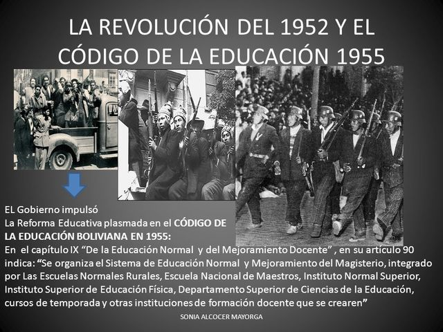

4: Reforma Educativa (principal)
Características generales
La Reforma Educativa fue uno de los pilares fundamentales de la Revolución Nacional de 1952 en Bolivia. Su principal objetivo fue democratizar la educación y hacerla accesible a todos los bolivianos, especialmente a la población indígena y rural que había sido históricamente marginada. Se impulsó un sistema educativo que buscaba integrar al país a través de la educación, fomentando la igualdad de oportunidades y el desarrollo social.
- Educación rural y bilingüe que incorporaba las lenguas originarias en la enseñanza inicial.
- Fortalecimiento del papel del Estado como principal responsable de la educación pública.
- Creación de nuevas escuelas rurales y normales para la formación de maestros en distintas regiones del país.
Contexto histórico
Antes de 1952, Bolivia presentaba una alta tasa de analfabetismo, especialmente entre los sectores indígenas y campesinos, que superaba el 60% de la población. La educación estaba concentrada en las ciudades y reservada principalmente para las clases medias y altas. En el área rural, la mayoría de los niños no tenía acceso a la escuela, y los programas educativos no consideraban la lengua ni la cultura de las comunidades originarias.
Reforma
Con la llegada del Movimiento Nacionalista Revolucionario (MNR) al poder, se planteó una revolución educativa profunda. Se crearon escuelas rurales y centros de alfabetización, con un enfoque popular y participativo. La reforma buscaba que la educación dejara de ser un privilegio urbano y se convirtiera en un derecho de todos los bolivianos. Se impulsó una educación nacional, laica, gratuita y obligatoria, orientada a la integración social y al desarrollo productivo del país.
Programas implementados
- Alfabetización masiva: Campañas nacionales para reducir el analfabetismo rural.
- Formación docente: Creación de escuelas normales rurales para capacitar maestros especializados.
- Educación técnica: Enseñanza de oficios y habilidades productivas para fortalecer la economía local.
- Educación bilingüe intercultural: Reconocimiento de lenguas nativas y respeto a la identidad cultural.
Impacto
La reforma tuvo resultados significativos, como el aumento de la matrícula escolar y la expansión de la educación hacia regiones rurales que antes estaban totalmente excluidas. Contribuyó a mejorar la inclusión social y cultural, permitiendo que miles de campesinos e indígenas accedieran por primera vez a la educación formal. Sin embargo, enfrentó limitaciones materiales, como la falta de infraestructura adecuada y la escasez de recursos. Aun así, marcó el inicio de una nueva etapa en la educación boliviana, sentando las bases de un sistema más equitativo e inclusivo.
